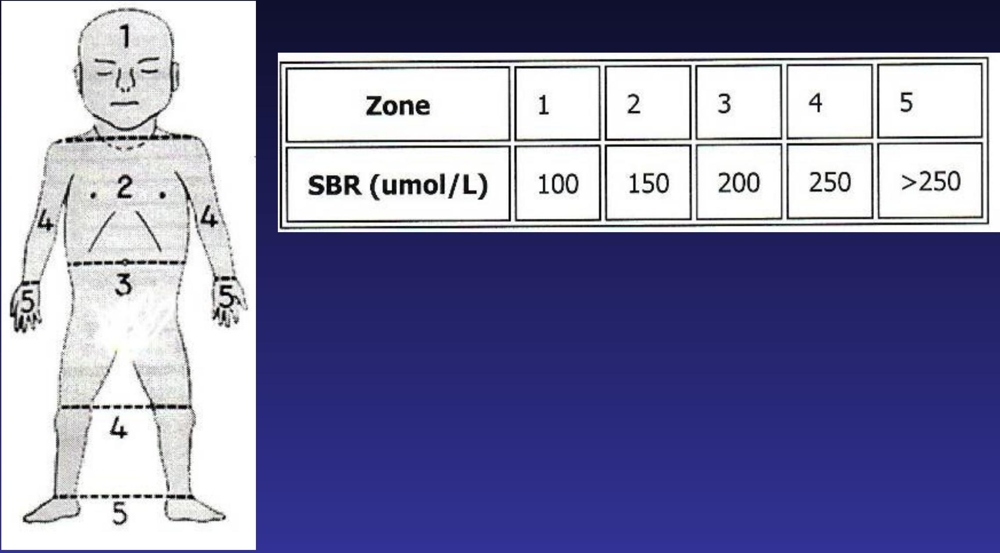

Management and Treatment
Treatment Options
- Phototherapy
- Exchange transfusion
- Drugs
- Alkalinization of plasma
Treatment
- Assess for jaundice in bright, natural light if possible, check the eyes, blanched skin on nose and the sole of the foot
- Always measure serum bilirubin if age < 24 hours and if clinically moderate or severe - Any jaundice if aged <24hrs needs further investigation and treatment
- Refer early if jaundice in those aged <24hrs and facility cannot provide phototherapy and exchange transfusion
Indications of phototherapy:
- In a well baby with jaundice easily visible on the sole of the foot
- In a preterm baby with ANY visible jaundice
- In a baby with easily visible jaundice and inability to feed or other signs of neurological impairment and consider immediate exchange transfusion
Mechanism of action of phototherapy
Clinical jaundice and indirect hyperbilirubinemia are reduced by exposure to a high intensity of light in the visible spectrum. Bilirubin absorbs light maximally in the blue range ( $420-470 \mathrm{~nm}$ ). Broad-spectrum white, blue, and special narrow-spectrum (super) blue lights have been effective in reducing bilirubin levels. Bilirubin in the skin absorbs light energy, causing several photochemical reactions.
structural isomerisation:
phototherapy refers to the use of light to convert bilirubin molecules in the body into water soluble isomers that can be excreted by the body. The main structural isomer of bilirubin is Z-lumirubin. structural isomerization is irreversible. structural isomers of bilirubin are less lipophilic than normal bilirubin and can be excreted into bile without undergoing glucuronidation in the liver. Structural bilirubin isomers, like Z-lumirubin, can also be excreted in the urine.
configurational isomerisation:
converting the toxic native unconjugated 4Z, 15Z-bilirubin into an conjugated configurational isomer 4Z,15E-bilirubin, which can then be excreted in bile without conjugation. Configurational isomerization is reversible, the configurational of bilirubin are less lipophilic than normal bilirubin and can be excreted into bile without undergoing glucuronidation in the liver. Some of the configurational isomers of bilirubin, however, revert back to the native form after excretion into bile and can be reabsorbed via enterohepatic circulation in the gut.
Photooxidation :
The absorptions of light by bilirubin also results in the generation of excited-state bilirubin molecules that react with oxygen to produce colorless oxidation products, or photooxidation products. This process occurs more slowly than configurational or structural isomerization. Photooxidation products are primarily excreted in the urine.
Kramer's rule
Clinically jaundiced when the bilirubin level reaches $80-120 \mu \mathrm{~mol} / \mathrm{L}$
- Stop phototherapy - when bilirubin 50 micromol/L lower than phototherapy threshold for the baby's age on day of testing
Phototherapy and Supportive Care Checklist
- Shield the eyes with eye patches. - Remove periodically such as during feeds
- Keep the baby naked
- Place the baby close to the light source - 45 cm distance is often recommended but the more light power the baby receives the better the effect so closer distances are OK if the baby is not overheating especially if need rapid effect.
- May use white cloth to reflect light back onto the baby making sure these do not cause overheating
- Do not place anything on the phototherapy devices - lights and baby need to keep cool so do not block air vents / flow or light. Also keep device clean - dust can carry bacteria and reduce light
- Promote frequent breastfeeding. Unless dehydrated, supplements or intravenous fluids are unnecessary.
- Phototherapy use can be interrupted for feeds; allow maternal bonding.
- Periodically change position supine to prone - Expose the maximum surface area of baby to phototherapy; may reposition after each feed.
- Periodic (12 to 24 hrs ) plasma/ serum bilirubin test. Visual testing for jaundice or transcutaneous bilirubin is unreliable.
- make sure that each light source is working and emitting light.
- Fluorescent tube lights should be replaced if:
- More than 6 months in use (or usage time >2000 hrs)
- Tube ends have blackened
- Lights flicker.
- Complications
- loose stools
- erythematous macular rash
- purpuric rash associated with transient porphyrinemia
- overheating
- dehydration (increased insensible water loss, diarrhea)
- hypothermia from exposure
- benign condition called bronze baby syndrome..
- Contraindication - presence of porphyria.
Intravenous Immunoglobulin
- is an adjunctive treatment for hyperbilirubinemia due to isoimmune hemolytic disease
- Its use is recommended when serum bilirubin is approaching exchange levels despite maximal interventions including phototherapy.
- Intravenous immunoglobulin ( $0.5-1.0 \mathrm{~g} / \mathrm{kg} /$ dose; repeat in 12 hr ) has been shown to reduce the need for exchange transfusion in both ABO and Rh hemolytic disease, presumably by reducing hemolysis.
Exchange Transfusion
Introduction
- An exchange transfusion involves removing aliquots of patient blood and replacing with donor blood in order to remove abnormal blood components and circulating toxins whilst maintaining adequate circulating blood volume.
- It is primarily performed to -remove antibodies
- excess bilirubin in isoimmune disease
- the incidence of exchange transfusion is decreasing
- secondary to the prevention
- improved prenatal management of alloimmune haemolytic disease
- improvements in the management of neonatal hyperbilirubinaemia
Indications
- Alloimmune haemolytic disease of the newborn
- Remove circulating bilirubin to reduce levels and prevent kernicterus
- Replace antibody-coated red cells with antigen-negative red cells
- Severe hyperbilirubinaemia secondary to alloimmune haemolytic disease of the newborn is the most common reason for exchange transfusion in the neonatal intensive care unit.
- A total serum bilirubin level at or above the exchange transfusion level should be considered a medical emergency and intensive phototherapy (multiple light) should be commenced immediately.
- Significant unconjugated hyperbilirubinaemia with risk of kernicterus due to any cause when intensive phototherapy is unsuccessful
- Severe anaemia (where there is normal or increased circulating blood volume)
- Antibodies in maternal autoimmune disease
- Polycythaemia (to reduce haematocrit, usually accomplished with partial exchange transfusion using normal saline replacement)
- Severe disturbances of body chemistry
- Double volume exchange transfusion is performed - if intensive phototherapy has failed to reduce bilirubin levels to a safe range
- if the risk of kernicterus exceeds the risk of the procedure.
procedure
- Done in neonatal ICU
- Use one way or 2 way catheter
- May use umbilical vein up to inferior vena cava or atrium
- Blood type rhesus negative blood group of blood withdraw over 2 minutes infuse slightly faster
- Blood volume for infusion - $85 \mathrm{mls} / \mathrm{kg}$ body weight and give double volume thus $170 \mathrm{mls} / \mathrm{kg}$ body weight
- One volume removes $65 \%$ of babies RBC
- Double volume removes $88 \%$ of babies RBC
Complications
- Air embolus
- metabolic acidosis
- electrolyte abnormalities- Hyperkalemia, hypernatremia
- hypoglycemia
- hypocalcemia
The most commonly reported adverse events during or soon after exchange transfusion:
- Catheter related complications; air emboli; thrombosis; haemorrhage
- Haemodynamic (related to excess removal of injection of blood): hypo or hypertension, intraventricular haemorrhage (preterm)
- Hypo or hyperglycaemia
- Hypocalcaemia, hyperkalaemia, acidaemia
Potential complications related to exchange transfusion:
- Arrhythmias
- Bradycardia
- Neutropenia, dilutional coagulopathy
- Feed intolerance, necrotizing enterocolitis
- Septicaemia, blood born infection
- Hypo or hyperthermia
- thrombocytopenia, volume overload
- NEC
- infection
- graft versus host disease
- death.
- Anaemia/polycythemia
- Coagulopathy
- Blood transmited infections
Monitoring During Exchange Transfusion
Preparation of the Infant
Medical staff should discuss the procedure with
Pre-exchange specimens
- Arterial blood gases
- Electrolytes sodium, pottasium, calcium, blood glucose
- Full blood count ,differentials
- Urea,creatinine
- Bilirubin total and direct
- Blood group,mothers blood group
During the procedure
- Blood gas analysis
- Electrolyte
- Blood glucose
Post-exchange specimens
- Arterial blood gases analysis
- Electrolytes sodium, potasium, calcium, blood glucose
- Full blood count ,differentials
- Urea,creatinine
- Bilirubin total and direct
- Blood group,mothers blood group
Clinical monitoring
Baseline
- Axilla Temperature
- Heart rate
- Respiratory rate
- Blood pressure
- Oxygen saturation
- continously
- skin Temperature
Post transfusion
- Axilla Temperature every 15 minutes
- Record blood in and blood out
- Monitor vitals every 2 hours post transfusion
NOTE: This widely accepted treatment is repeated if necessary to keep indirect bilirubin levels in a safe range
Prognosis
- Overt neurologic signs have a grave prognosis;
- more than 75% of such infants die
- 80% of affected survivors
- have bilateral choreoathetosis
- involuntary muscle spasms
- Mental retardation
- deafness
- spastic quadriplegia
Conclusion
POCKET BOOK OF Hospital care for children GUIDELINES FOR THE MANAGEMENT OF COMMON CHILDHOOD ILLNESSES
Second edition